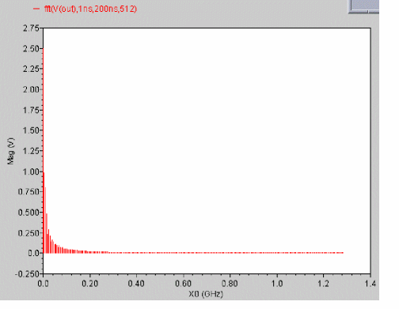
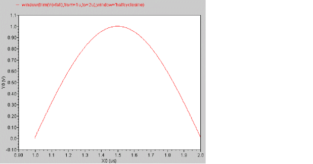
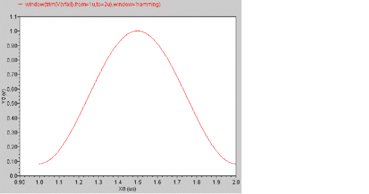

A
Built-In Functions
The built-in functions support two syntaxes:
-
Positional syntax
Requires each optional parameter up to and including the last optional parameter entered, but beyond that everything can be omitted.cross(
sig[,dir[,n[,thresh[,start[,xtol[,ytol[,accuracy]]]]]]] ) -
Named syntax
Allows any optional parameter to be specified — the preceding optional parameters need not be specified.cross( sig=
sig[, dir=dir] [, n=n] [, thresh=thresh] [, start=start] [, xtol=xtol] [, ytol=ytol] [, accuracy=accuracy] )
For example, the following statements are equivalent.
export real crossOut = cross(V(out), ’fall, 1, 1 )
export real crossOut = cross( sig=V(out), dir=’fall, n=1, thresh=1 )
abs
Returns the absolute value of a signal.
Syntax
abs( arg)
abs( arg=arg )
Arguments
Example
export real myabs = abs( -5 )
myabs = 5
export real outabs = abs(arg=V(out))@1m
returns the value of the signal V(out) at 1ms.
acos
Returns the arc cosine of a signal.
Syntax
acos( arg )
acos( arg=arg )
Arguments
Example
export real myacos = acos( 1)
myacos = 0
acosh
Returns the hyperbolic arc cosine of a signal.
Syntax
acosh( arg )
acosh( arg=arg )
Arguments
Example
export real myacosh = acosh( 1)
myacosh = 0
analstop
Returns the simulation stop value.
Syntax
analstop( )
Arguments
Example
alias measurement transient {
run tran( step=1e-12, pstep=1e-12, stop=2e-08 )
export real anal_stop= analstop()
}
run transient
anal_stop = 2e-08
angle
Returns the angle of a real or complex number, or a waveform in degrees.
Syntax
angle( arg)
angle( arg=arg )
Arguments
Example 1
export real myangle = angle( cplx(1,2) )
myangle = 63.43
Example 2
export real phasemargin = angle( s(2,1) ) @ ft
phasemargin= 15.0369
argmax
Returns the X value corresponding to the maximum Y value of a signal. If multiple X values are returned, the first one is used.
Syntax
argmax( sig )
argmax( sig=sig )
Arguments
Example
export real timeAtMax = argmax( V(out) )
The following diagram illustrates how the result is determined.
argmin
Returns the X value corresponding to the minimum Y value of a signal. If multiple X values are returned, the first one is used.
Syntax
argmin( arg )
argmin( arg=arg )
Arguments
Example
export real timeAtMin = argmin( V(sinewave) )
The following diagram illustrates how the result is determined.
asin
Returns the arc sine of a signal.
Syntax
asin( arg )
asin( arg=arg )
Arguments
Example
export real myasin = asin( 1 )
myasin = 1.57
asinh
Returns the hyperbolic arc sine of a signal.
Syntax
asinh( arg )
asinh( arg=arg )
Arguments
Example
export real myasinh = asinh( 1 )
myasinh = 0.88
atan
Returns the arc tangent of a signal.
Syntax
atan( arg )
atan( arg=arg )
Arguments
Example
export real myatan = atan( 1 )
myatan = 1.56
atanh
Returns the hyperbolic arc tangent of a signal.
Syntax
atanh( arg )
atanh( arg=arg )
Arguments
avg
Returns the average value of a signal.
Syntax
avg( arg )
avg( arg=arg )
Arguments
Example
export real myavg = avg( V(out) )
avgdev
Returns the mean absolute deviation of a scalar argument or waveform. The mean absolute deviation is defined as follows:
1/N * ( |X1-mean| + |X2-mean| +...... |XN-mean| )
where | is the absolute value of the difference and N is the total number of Samples.
Syntax
avgdev( arg )
avgdev( arg=arg )
Arguments
bw (bandwidth)
Calculates the bandwidth of a waveform.
Syntax
bw(sig,response,db,max)
bw( sig=sig, response=response, db=db, max=max)
Arguments
Example
Assume you have the following signal.
export real bwOut = bw(mag(V(bout)), response=’band)
generates, at the default db value of -3, the bw value
1000004.1627941281Hz
Note that the output in MDL includes the unit (Hz in the above example), whereas in SKILL it does not.
This value (approximately 1MHz) is illustrated on the graph by the double-ended arrow.
ceil
Rounds a real number up to the closest integer value.
Syntax
ceil( arg )
ceil( arg=arg )
Arguments
Example
export real myceil = ceil( 1.6 )
myceil = 2
cfft
Performs a Fast Fourier Transform on a complex time domain waveform and returns its frequency spectrum. The cfft function takes two time signals that in combination form a complex input signal.
Syntax
cfft(sig_re,sig_im,from,to,numPoints[,window])
cfft( sig_re=sig_re,sig_im=sig_im,from=from,to=to,numPoints=numPoints[, window=window])
Arguments
clip
Returns the portion of a signal between two points along the Y-axis.
Syntax
clip(sig,from,to)
clip( sig=sig, from=from, to=to)
Arguments
Example 1
The following example works in an MDL control file.
export real clipOut = avg ( clip (sig=V(sinewave), from=0, to=2.5) )
Example 2
In Virtuoso Visualization and Analysis XL,
clip (sig=V(sinewave), from=0, to=2.5)
transforms the following input signal
into the following output signal.
conj
Returns the conjugate of a complex number.
Syntax
conj( arg )
conj( arg=arg )
Arguments
Example
export cplx mycplx = cplx ( 1,2 )
export cplx conj_mycplx = conj ( mycplx )
mycplx = (1,2)
conj_mycplx = (1,-2)
convolve
Returns a waveform consisting of the time domain convolution of two signals. This function is available in Virtuoso Visualization and Analysis XL only.
Syntax
convolve(sig1,sig2[,n_interp_steps])
clip( sig1=sig1, sig2=sig2[, n_interp_steps=n_interp_steps])
Arguments
Equation
Convolution is defined by the following equation:
Example
real vcdelay[]=crosses(sig=V(clock), thresh=0.9, dir='rise, n=1)
real outcross[]=crosses(V(q),n=6,thresh=vdd/2)
export real myconv[] = convolve(vcdelay,outcross,5)
myconv[00] = 2.57108e-13
myconv[01] = 2.02971e-13
myconv[02] = 1.74678e-13
myconv[03] = 1.81539e-13
myconv[04] = 2.03094e-13
myconv[05] = 2.3083e-13
myconv[06] = 2.65196e-13
myconv[07] = 3.06643e-13
myconv[08] = 3.55544e-13
myconv[09] = 3.84546e-13
myconv[10] = 3.94928e-13
myconv[11] = 3.96003e-13
myconv[12] = 3.88035e-13
myconv[13] = 3.70677e-13
myconv[14] = 3.43269e-13
myconv[15] = 3.05072e-13
cos
Returns the cosine of a signal.
Syntax
cos( arg )
cos( arg=arg )
Arguments
Example
export real mycos = cos( 1 )
mycos = 0.54
cosh
Returns the hyperbolic cosine of a signal.
Syntax
cosh( arg )
cosh( arg=arg )
Arguments
Example
export real mycosh = cosh( 1 )
mycosh = 1.54
cplx
Returns a complex number created from two real arguments.
Syntax
cplx(R[,I] )
cplx( R=R[, I=I] )
Arguments
Example
export cplx mycplx = cplx( 1,2 )
mycplx = (1,2)
cross
Returns the X value where a signal crosses the threshold Y value.
Syntax
cross(sig[,dir[,n[,thresh[,start[,xtol[,ytol[,accuracy]]]]]]] )
cross( sig=sig[, dir=dir] [, n=n] [, thresh=thresh] [, start=start] [, xtol=xtol] [, ytol=ytol] [, accuracy=accuracy] )
Arguments
Example
export real crossOut = cross( sig=V(out), dir=’fall, n=1, thresh=1 )
The following diagram illustrates how the result is determined.
crosscorr
Returns the cross correlation of the specified signals. This function is available only in Virtuoso Visualization and Analysis XL.
When the input signals are double waveforms,
crosscorr (sig1, sig2) = convolve (sig1, flip(sig2))
When one of the input signals is a complex waveform (sig2 in the following case),
crosscorr (sig1, sig2) = convolve (sig1, flip(conj(sig2)))
Syntax
crosscorr(sig1,sig2[,n_interp_steps])
crosscorr( sig1=sig1, sig2=sig2[, n_interp_steps=n_interp_steps])
Arguments
crosses
Returns the X values where a signal crosses the threshold Y value.
Syntax
crosses(sig[,dir[,n[,thresh[,start[,xtol[,ytol[,accuracy]]]]]]] )
crosses( sig=sig[, dir=dir] [, n=n] [, thresh=thresh] [, start=start] [, xtol=xtol] [, ytol=ytol] [, accuracy=accuracy] )
Arguments
Example
export real crossesOut[] = crosses( sig=V(out), dir=’rise, thresh=0 .0 )
crossesOut[0] = 1e-05
crossesOut[1] = 2e-05
crossesOut[2] = 3e-05
crossesOut[3] = 4e-05
crossesOut[4] = 5e-05
crossesOut[5] = 6e-05
crossesOut[6] = 7e-05
crossesOut[7] = 8e-05
crossesOut[8] = 9e-05
The output waveform looks as shown below:
d2r (degrees-to-radians)
Converts a waveform from degrees to radians.
Syntax
d2r( arg )
d2r( arg=arg )
Arguments
Example
export real myd2r = d2r( 180 )
db
Converts a signal to db where db=20*log(x). This function usually applies to voltage or current signals in volts or amperes.
Syntax
db( arg )
db( arg=arg )
Arguments
Example
export real dcgain = db( V(out) / V(in)) @1MHz
The above example assumes that out and in are signals from an ac dataset.
db10
Converts a signal to db where db=10*log(x). This function usually applies to power signals in watts.
Syntax
db10( arg )
db10( arg=arg )
Arguments
Example
export real mydb10= db10( v0:pwr )
dbm
Converts a signal to dbm where dbm=10*log(x)+30. This function usually applies to power signals in milliwatts (mW).
Syntax
dbm( arg )
dbm( arg=arg )
Arguments
Example
export real mydbm= dbm ( v0:pwr )
deltax
Returns the difference in the abscissas of two cross events.
Syntax
deltax(sig1[,sig2[,dir1[,n1[,thresh1[,start1[,dir2[,n2[,thresh2[,start2],xtol[,ytol[,accuracy]]]]]]]]]]]] )
deltax( sig1=sig1, sig2=sig2[, dir1=dir1] [, n1=n1] [, thresh1=thresh1] [, start1=start1] [, dir2=dir2] [, n2=n2] [, thresh2=thresh2] [, start2=start2] [, xtol=xtol][, ytol=ytol][, accuracy=accuracy])
Arguments
Example 1
export real deltaxInOut = deltax( sig1=V(in), sig2=V(out), dir1=’fall, \
thresh1 = 0.5, dir2=’fall, thresh2=0.5, start1=10n, start2=10n )
The following diagram illustrates how the result from the above example is determined.
Example 2
export real delay2 = deltax( sig1=V(in), sig2=V(out), dir1=’fall, \
thresh1 = 0.5, dir2=’fall, thresh2=0.5, start1=10n, absstart2=10n )
The following diagram illustrates how the result from the above example is determined.
deltaxes
The deltaxes function is similar to the deltax function. However, it returns the differences in the abscissas of two cross events in the form of an array.
deriv
Returns the derivative of a signal.
Syntax
deriv( sig )
deriv( sig=sig )
Arguments
Example1
export real out_4n= deriv( V(out) )@4n
The derivative is calculated for signal V(out) at t=4ns.
Example 2
export real out_dvdt_fall=deriv(out)@cross(out, dir='fall, n=1, thresh=1.5)
The derivative is calculated for signal V(out) at its first crossing point at 1.5V in the fall direction.
dutycycle
Calculates the ratio of the time for which the signal remains high to the period of the signal. You should use this function on periodic signals only.
Syntax
dutycycle(sig,theta, mode)
dutycycle( sig=sig, theta=theta,[mode=’integrate|’percentage|’threshold])
Arguments
Example
export real dutycycleOut = dutycycle ( sig=V(out), theta=40 )
dutycycleOut = 0.25436626860397216
dutycycles
Returns the dutycycle of a nearly-periodic signal as a function of time.
Syntax
dutycycles(sig,theta)
dutycycles( sig=sig, theta=theta)
Arguments
Example 1
In Virtuoso Visualization and Analysis XL,
export real dutycyclesOut = dutycycles ( sig=V(out), theta=40 )
Example 2
export real dutycycles_q[] = dutycycles ( sig=V(q), theta=40 )
dutycycles_q[0] = 0.3877
dutycycles_q[1] = 0.6897
dutycycles_q[2] = 0.685696
transforms the following input signal
into the following output signal
exp
Returns the ex value of a signal.
Syntax
exp( arg )
exp( arg=arg )
Arguments
Example
export real myexp = exp( 2 )
myexp = 7.389
falltime
Returns the fall time for a signal measured between percent high and percent low of the difference between the initial and final values. The measurement is always done with ordinate (Y-axis) values.
falltimes function to obtain the fall time for all edges instead of a single edge that is returned by the falltime function.Syntax
falltime(sig[,initval[,finalval[,inittype[,finaltype[,theta1[,theta2[,xtol[,ytol[,accuracy]]]]]]]]] )
falltime( sig=sig, initval=initval, finalval=finalval[, inittype=inittype] [, finaltype=finaltype] [, theta1=theta1] [, theta2=theta2] [, xtol=xtol] [, ytol=ytol] [, accuracy=accuracy] )
Arguments
Example
export real falltimeOut = falltime ( arg=V(out), initval=10u, inittype=’x, finalval=19u, finaltype=’x, theta1=90, theta2=10)
The following diagram illustrates how the result from the above example is determined.
fft
Performs a Fast Fourier Transform on the signal and returns its frequency spectrum.
Syntax
fft(sig,from,to,numPoints,window)
fft( sig=sig,from=from,to=to,numPoints=numPoints,window=window)
Arguments
|
The number of data points to be used for calculating the fft. If this number is not a power of 2, it is automatically raised to the next higher power of 2. |
|
|
The algorithm used for calculating the fft. For more information, see window.
Valid values: |
Example
In Virtuoso Visualization and Analysis XL,
fft( sig=(V(out), from=1ns, to=200ns, numPoints=512, window=’bartlett)
transforms the following input signal
into the following output signal. The left subwindow shows the magnitude part of the spectrum and the right subwindow shows the phase part.
flip
Returns a reversed version of a signal (rotates the signal along the Y-axis).
Syntax
flip ( sig )
flip( sig=sig )
Arguments
Example
export real flipOut = flip( V(out) )
transforms the following input signal

into the following output signal.

floor
Rounds a real number down to the closest integer value.
Syntax
floor( arg )
floor( arg=arg )
Arguments
Example
export real myfloor = floor( 1.6 )
myfloor = 1
fmt
Provides formatting capability to turn MDL datatypes into a string representation.
Syntax
fmt( “format”, varargs )
fmt( format=”format”,varargs=varargs)
Arguments
Example
alias measurement printmeas { input string out="myfile.out" print fmt("Header is %s\n", out) to=out print fmt("%s\t%s\t\t%s\t%s\t%s\t%s\n", "%d","%f","%o","%x","%X","%u") addto=out
print fmt("%d\t%f\t%o\t%x\t%X\t%u\n",10,10,10,10,10,10) addto=out
}
run printmeas (out="test.dat")
The simulator writes the following results to the test.dat file:
Header is test.dat
%d %f %o %x %X %u
10 10.000000 12 a A 10
freq
Returns an array of frequencies defined by the given threshold crossing and direction for a signal.
Syntax
freq(sig,thresh,dir)
freq( sig=sig, thresh=thresh,dir=direction)
Arguments
Example
In Virtuoso Visualization and Analysis XL,
export real freqOut = freq ( sig=V(out), thresh=0.5, dir=’rise )
freqOut[0] = 5.0001e+04
freqOut[1] = 5e+04
is converted to the following output signal

freq_jitter
Returns a waveform representing the deviation from the average frequency.
Syntax
freq_jitter(sig,thresh,dir, binsize)
freq_jitter( sig=sig, thresh=thresh,dir=direction,binsize=binsize)
Arguments
|
Integer used to calculate the average frequency of the signal. If binsize=0, all frequencies are used to calculate the average. If binsize=N, the last N frequencies are used to calculate the average. |
Example
In Virtuoso Visualization and Analysis XL,
export real freq_jitterOut = freq_jitter ( sig=V(out), thresh=0.5, dir=’rise, binsize=4 )
is converted to the following output signal
gainBwProd
Returns the product of DC gain and upper cutoff frequency for a low-pass type filter or amplifier.
Syntax
gainBwProd( sig )
gainBwProd( sig=sig )
Arguments
|
The signal. It can represent the magnitude of the gain or a frequency response. |
Example
export real gainBwProdOut = gainBwProd ( sig=mag(out) )
gainBwProdOut = 1804641.158689868
gainmargin
Computes the gain margin of the loop gain of an amplifier.
The gain margin is calculated as the magnitude (in dB) of the gain at f0. The frequency f0 is the smallest frequency in which the phase of the gain provided is -180 degrees. For stability, the gain margin must be positive.
Syntax
gainmargin( sig )
gainmargin( sig=sig )
Arguments
|
The loop gain of interest over a sufficiently large frequency range. |
Example
export real gainmar=gainmargin(vout)
getinfo
Returns information related to the simulator, such as version, subversion, and command information.
Syntax
getinfo( type )
Arguments
|
Type of information to be displayed. Valid values are |
Example
string simulator=getinfo(’simulator)
string version=getinfo(’version)
string subversion=getinfo(’subversion)
string cmdline=getinfo(’cmd)
groupdelay
Calculates the rate of change of phase with respect to frequency in a frequency response measurement.
groupdelay=d(phase)/dw
where w=angular frequency in rad/s=2*PI*f
Syntax
groupdelay( sig )
groupdelay( sig=sig )
Arguments
Example
In Virtuoso Visualization and Analysis XL,
export real groupdelayOut = groupdelay ( sig=out )
is converted to the following output signal
histo
Creates a histogram from a signal.
The histo function is available from the calculator. It is not supported within a Spectre MDL control file since it returns a scalar and not a waveform.
Syntax
histo(sig,nbins,min,max)
histo( sig=sig, nbins=nbins, min=min, max=max)
Arguments
Example
histo(V(out),nbins=10, min=-1.0, max=4.0)
creates a display with 10 bins that might look like this when the leftmost bin is empty.
I
Syntax
I(devname) //equivalent to devname:0
I(devname:term) //term can be either terminal name or terminal index
I(Instname:term) //term can be either terminal name or terminal index
The I probe function does not support current access by node name, nor does it support current difference between two devname:term(s). In other words, it is illegal to apply the I probe to a node or a pair of nodes.
Arguments
|
The terminal name or terminal index of a device or a subcircuit. |
Examples
I(Rload:1) // Returns the current through terminal Rload:1
I(I0.mp1:d) // Returns the current through device terminal name d
I(I0:vdd1) // Returns the current through subcircuit terminal name vdd1
ifft
Performs an inverse Fast Fourier Transform on a frequency spectrum and returns the time domain representation of the spectrum.
Syntax
ifft ( sig )
ifft( sig=sig)
Arguments
Example
fft( sig=V(out), from=1ns, to=200ns, npoints=512)
results in the graph on the right side.
|
|

|
Now if I perform an ifft on the above expression,
ifft( fft( sig=V(out), from=1ns, to=200ns, npoints=512) )
The result is the same as the original signal (out) – from 1ns to 200ns.
iinteg
Returns the incremental area under the waveform.
Syntax
iinteg( sig )
iinteg( sig=sig )
Arguments
Example 1
export real iintegOut = iinteg( V(out) )
transforms the following input signal
into the following output signal
Each X value on the output trace is equal to the area under the input trace from start till that particular X-value.
im
Returns the imaginary part of a complex number.
Syntax
im( arg )
im( arg=arg )
Arguments
Examples
export real myim = im( cplx(1,2) )
myim = 2
export real im_sll = im( s(1,1) )
im_sll = 0.670029
int
Returns the integer portion of a real value.
Syntax
int( arg )
int( arg=arg )
Arguments
Example
int(4.998)
4
integ
Returns the area bounded under the curve.
Syntax
integ( sig )
integ( sig=sig )
Arguments
Example 1
export real integOut = integ( trim( sig=V(sinewave), from=10n, to=50n ) )
The following diagram illustrates how the result from the above example is determined. The result is equal to the shaded area in the graph.
ln
Returns the natural logarithm of a signal or a number. If no specific point of a signal is specified, MDL returns value for the last simulation point of the signal.
Syntax
ln( arg )
ln( arg=arg )
Arguments
Examples
export real mylog = ln ( 10 )
mylog = 2.3
export real myln = ln ( v(q))
export real myln_ons = ln ( v(q) @0 )
myln = -0.223144
myln_ons = -21.9773
log10
Returns the base 10 logarithm of a signal or a number. If no specific point of a signal is specified, MDL returns value for the last simulation point of the signal.
Syntax
log10( arg )
log10( arg=arg )
Arguments
Example
export real mylog10 = log10( 10 )
mylog10 = 1
mag
Returns the magnitude of a signal or complex number.
Syntax
mag( arg )
mag( arg=arg )
Arguments
Example
export real mymag = mag( cplx(1,2) )
mymag = 2.236
max
Returns the maximum value of a signal, maximum value of two real values, or the maximum value or a signal and a real value
Syntax
max( arg )
max( arg=arg )
Arguments
Example 1
export real maxOut1 = max ( V(out ) )
Example 2
export real maxOut2 = max ( V(out)@100n, V(out)@200n )
This returns the value of out at 100n or 200n – whichever is greater.
Example 3
export real maxq=max(trim(q, from=0, to=100n))
This returns the maximum value of out over the range of t=0ns to t=100ns.
Example 4
export real maxOut4 = max( I(IP1)@ 1.0 , 1e-15 );
min
Returns the minimum value of a signal or the minimum value of two real values.
Syntax
min( arg )
min( arg=arg )
Arguments
Example
export real minOut1 = min( V(out) )
Example 2
export real minOut2 = min ( V(out)@100n, V(out)@200n )
This returns the value of out at 100n or 200n – whichever is smaller.
mod
Returns the floating point remainder of the dividend divided by the divisor. The divisor cannot be zero.
Syntax
mod(dividend,divisor)
mod( dividend=dividend, divisor=divisor)
Arguments
Example
export real mymod = mod( 546, 324 )
mymod = 222
movingavg
Calculates the moving average for the specified signal.
Syntax
movingavg(sig[,n])
movingavg( sig=sig[, n=n] )
Arguments
overshoot
Returns the overshoot/undershoot of a signal as a percentage of the difference between initial and final values.
Syntax
overshoot(sig[,initval[,finalval[,inittype[,finaltype]]]] )
overshoot( sig=sig, initval=initval, finalval=finalval[, inittype=inittype] [, finaltype=finaltype] )
Arguments
|
The initial value. To calculate the undershoot of a signal, the initval should be higher than finalval. |
|
|
When |
|
|
When |
Example
export real overshootOut = overshoot ( sig=V(out), initval=1, finalval=3, inittype=’y, finaltype=’y) )
OvershooutOut is given by the following formula:
period_jitter
Returns a waveform representing the deviation from the average period.
Syntax
period_jitter(sig,thresh,dir, binsize)
period_jitter( sig=sig, thresh=thresh,dir=direction,binsize=binsize)
Arguments
Example
export real period_jitterOut = period_jitter ( sig=V(out), thresh=0.5, dir=’rise, binsize=4 )
ph
Returns the phase of a signal in radians.
Syntax
ph(arg[, wrap=<value>])
ph( arg=arg,wrap=value)
Arguments
|
Wraps the phase. The phase is wrapped around +/- PI. Possible values are |
Example
ph( v(out), wrap=’no )
phasemargin
Computes the phase margin of the loop gain of an amplifier. The phase margin is calculated as the difference between the phase of the gain in degrees at f0 and at -180 degrees. The frequency f0 is the smallest frequency where the gain is 1. For stability, the phase margin must be positive. The value is returned in degrees.
Syntax
phasemargin( sig )
phasemargin( sig=sig )
Arguments
|
The loop gain of interest over a sufficiently large frequency range. sig can be |
Example
export real phasemar=phasemargin(vout)
pow
Returns the value of base raised to the power of exponent (baseexponent).
Syntax
pow(base,exponent)
pow( base=base, exponent=exponent)
Arguments
Example
export real mypow = pow( 2,2 )
mypow = 4
pp (peak-to-peak)
Returns the difference between the highest and lowest values of a signal.
Syntax
pp( sig)
pp( sig=sig )
Arguments
Example 1
export real ppOut = pp( V(out) )
The following diagram illustrates how the result from the above example is determined.
pzbode
Calculates and plots the transfer function for a circuit from pole zero simulation data. This function is available only in the MDL mode.
Syntax
pzbode(poles,zeroes,c,minfreq,maxfreq,npoints)
pzbode( poles=poles, zeroes=zeroes, c=c, minfreq=minfreq, maxfreq=maxfreq, npoints=npoints)
Arguments
|
The frequency interval for the bode plot, in points per decade. |
Example
The following diagram illustrates how the result with the values poles=POLESIR_1, zeroes=ZEROESIR_1, c=IR_1\[K\], minfreq=1e-3, maxfreq=1e3, and npoints=1000 is determined.
 |
|
pzfilter
Filters the poles and zeroes according to the specified criteria. The pzfilter function works only on pole zero simulation data. This function is available only in the MDL mode.
Syntax
pzfilter(poles,zeroes,maxfreq,reldist,absdist,minq)
pzfilter( poles=poles, zeroes=zeroes, maxfreq=maxfreq, reldist=reldist, absdist=absdist, minq=minq)
Arguments
pzfilter filters out the poles and zeroes with a frequency higher than 10 GHz (default value of maxfreq).Equations Defining the Q-Factor of a Complex Pole or Zero
Filtration Rules
-
Real poles can be cancelled only by real zeroes. A real pole P is cancelled by a real zero Z if the following equation is satisfied:
-
Complex poles and zeroes always occur in conjugated pairs. A pair of conjugated poles can only be canceled by a pair of conjugated zeroes. A pole pair
P1=a+jb,P2=a-jbis cancelled by a zero pairZ1=c+jd,Z2=c-jd, if the following equation is satisfied:
- Poles in the right-half plane are never cancelled because they show the instability of the circuit.
Example
The values poles=POLESIR_2, zeroes=ZEROESIR_2, absdist=0.05, and minq=10000 filters pole-zero pairs with a relative distance of less than 0.05 Hz from the plot on the left side. In the filtered plot shown on the right side, two pole-zero pairs have been filtered out.
 |
 |
r2d (radians-to-degrees)
Converts a scalar or waveform expressed in radians to degrees.
Syntax
r2d( arg )
r2d( arg=arg )
Arguments
Example
export real myr2d = r2d( 3.14 )
myr2d = 179.909
re
Returns the real portion of a complex number.
Syntax
re( arg )
re( arg=arg )7
Arguments
Examples
export real myre = re( cplx(1,2) )
myre = 1
export real real_sll = re( s(1,1) )
real_sll = 0.682203
real
Creates a real number from an integer number.
Syntax
real( arg )
real( arg=arg )
Arguments
risetime
Returns the rise time for a signal measured between percent low and percent high of the difference between the initial and final value.
risetimes function to obtain the rise time for all edges instead of a single edge returned by the risetime function.Syntax
risetime(sig[,initval[,finalval[,inittype[,finaltype[,theta1[,theta2[,xtol[,ytol[,accuracy]]]]]]]]] )
risetime( sig=sig, initval=initval, finalval=finalval[, inittype=inittype] [, finaltype=finaltype] [, theta1=theta1] [, theta2=theta2] [, xtol=xtol] [, ytol=ytol] [, accuracy=accuracy] )
Arguments
Example 1
export real risetimeOut1 = risetime( sig=V(out), initval=19u, finalval=30u, inittype=’x, finaltype=’x, theta1=10, theta2=90)
The following diagram illustrates how the result from the above example is determined.

Example 2
export real risetimeOut2 = risetime( sig=V(out), initval=0V, finalval=5V, inittype=’y, finaltype=’y, theta1=10, theta2=90)
The following diagram illustrates how the result from the above example is determined.
rmsnoise
Returns the root mean square noise of a signal. The root mean square is defined as:
rmsnoise=sqrt{ integral[Sig(t) * Sig(t)] }
Syntax
rmsnoise( sig:param )
rmsnoise( sig=sig:param)
Arguments
|
The parameter that refers to the noise to be provided. Possible values are |
Example
export real total_noise = rmsnoise ( myNoise:out )
SpectreMDL returns the total output referred noise from the pre-defined noise analysis myNoise.
rms (root-mean-square)
Returns the root mean square of a signal.
Syntax
rms( sig )
rms( sig=sig )
Arguments
Example
export real rmsOut = rms( V(out))
round
Rounds a number to the closest integer value.
Syntax
round( arg )
round( arg=arg )
Arguments
Example
export real myround = round( 1.234 )
myround = 1
S
Returns the complex value of Scattering (S) parameter of a network. Only available from sp analysis results.
Syntax
s(rowindex,colindex)
s(rowIndex=rowIndex, colIndex=colIndex)
Arguments
In general, the 2-port network S-parameter definitions are:
s(1,1) input port voltage reflection coefficient
s(2,2) output port voltage reflection coefficient
If used with the functions like db, angle, re or im, the real number value is returned:
db(s(1,1)) returns the db of s(1,1)
angle(s(1,1)) returns the phase of s(1,1) in degrees
ph(s(1,1)) returns the phase of s(1,1) in radians
re(s(1,1)) returns the real part of s(1,1)
im(s(1,1)) returns the image part of s(1,1)
Example
export real ft = cross( sig = ( db(s(2,1) ) ), dir = ’cross, n=1 )
sample
Returns a waveform or an array representing a sample of the signal based on step size or points per decade.
Syntax
sample(sig,from,to, by, type)
sample( sig=sig, from=from,to=to,by=by,type=type)
Arguments
|
Specifies whether the sample should be linear or logarithmic. Valid values: |
|
|
If type is |
Example 1
export real sampleOut = sample(sig=V(2), from=7.5us, to=18us, by=5us, type=’linear)
transforms the following input signal
into the following output signal
Example 2
export real v2smpl[] = sample(sig=V(2), from=10n, to=40n, by=0.1n)
The above example samples signal V(2) into an array as shown below:
v2smp1[0] = 1.08957e-10
v2smp1[1] = 1.21644e-08
v2smp1[2] = 1.8
v2smp1[3] = 2.39729e-07
v2smp1[4] = 1.8
...
settlingtime
Calculates the time required by a signal to settle at a final value within a specified limit.
Syntax
settlingtime(sig,initval,finalval, inittype, finaltype, theta)
settlingtime( sig=sig, initval=initval,finalval=finalval,inittype=inittype,finaltype=finaltype,theta=theta)
Arguments
Example
export real settlingTimeOut = settlingtime( sig=V(out), initval=0, finalval=1.0, inittype=’y, finaltype=’x, theta=5 )
settlingTimeOut = 3.7185180980334184E-5sec
The following diagram illustrates how the result from the above example is determined.
sign
Returns a value that corresponds to the sign of a number.
Syntax
sign( arg )
sign( arg=arg )
Arguments
Example
sign( -17.3)
-1.0
sin
Syntax
sin( arg )
sin( arg=arg )
Arguments
Example
export real mysin = sin( 1 )
mysin = 0.84
sinh
Returns the hyperbolic sine of a signal.
Syntax
sinh( arg )
sinh( arg=arg )
Arguments
Example
export real mysinh = sinh( 1 )
mysinh = 1.18
size
Returns the size of an array or the number of points in a waveform.
Syntax
size( arg, [, from [, to ] ])
size( arg=arg[, from=from] [,to=to])
Arguments
Example 1
run tran( step=1e-09, pstep=1e-09, stop=9e-02 )
export real signalNum = size( V(R1), 8.9e-022, 9e-02)
signalNum = 108018
Example 2
export real cro = crosses(sig=(V(R1))-(1/ 2),dir='cross,n=int(1))
export real num = size(cro)
cro[0] = 8.33333e-07
cro[1] = 4.16583e-06
cro[2] = 1.08334e-05
cro[3] = 1.41666e-05
num = 4
Example 3
export real arr [] = {1.1, 2.2}
export real num = size(arr)
arr[0] = 1.1
arr[1] = 2.2
num = 2
slewrate
Computes the average rate at which the buffer expression changes from percent low to percent high of the difference between the initial value and the final value.
Syntax
slewrate(sig[,initval[,finalval[,inittype[,finaltype[,theta1[,theta2[,xtol[,ytol[,accuracy]]]]]]]]] )
slewrate( sig=sig, initval=initval, finalval=finalval[, inittype=inittype] [, finaltype=finaltype] [, theta1=theta1] [, theta2=theta2] [, xtol=xtol] [, ytol=ytol] [, accuracy=accuracy] )
Arguments
Example
export real slewrate1 = slewrate( V(out), 20ns, 60ns )
6.337662406448401E7V/s
slice
Returns the slice of an array.
Syntax
slice( arg, from, to, step )
slice( arg=arg, from=from, to =to, step =step)
Arguments
|
A user-defined array, or an array that comes from the built-in function. |
|
Example
real arr[]={1.0,2.0,3.0,4.0,5.0,6.0,7.0}
export real myslice1=slice(arr,from=2,to=5,step=1)
export real myslice2=slice(arr,from=2,to=5,step=2)
myslice1[0] = 2
myslice1[1] = 3
myslice1[2] = 4
myslice1[3] = 5
myslice2[0] = 2
myslice2[1] = 4
snr
Calculates the signal to noise ratio from a complex frequency based signal.
Syntax
snr(sig,sig_from,sig_to,noise_from,noise_to)
snr( sig=sig, sig_from=sig_from, sig_to=sig_to, noise_from=noise_from, noise_to=noise_to)
Arguments
|
The left window border of the signal. The sig_from value must be greater than or equal to noise_from. |
|
|
The right window border of the signal. The sig_to value must be less than or equal to noise_to. |
|
Example
You have the following frequency plot.
To determine the signal-to-noise ratio, you use the statement
export real snr(fft(V(out),0,1e-3,1024),9e3,11e3,1,500e3)
29.268026738835342dB
spectrumMeas
Calculates Signal-to-Noise-and-Distortion Ratio (SINAD), Spurious Free Dynamic Range (SFDR), Effective Number of Bits (ENOB), and Signal-to-Noise Ratio (without distortion) by using discrete Fourier transform of the clipped portion of any given input signal.
The spectrum measure is used for characterizing A-to-D converters and is typically supported for transient simulation data.
Syntax
spectrumMeas(signal,startTime,endTime,numberofSamples,numberofNoisebins,startFrequency,endFrequency,windowType)
spectrumMeas( signal=signal, startTime=startTime, endTime=endTime, numberofSamples=numberofSamples, numberofNoisebins=numberofNoisebins, startFrequency=startFrequency, endFrequency=endFrequency, windowType=windowTypeadcspan=adcspanmeasureType=measureType)
Arguments
Example (netlist)
.tran 1n 1000n
.measure tran sinad param=spectrumMeas(V(1), 10ns, 110ns, 200, 0, 0, 0, 0, 0, 0)
.measure tran snhr param=spectrumMeas(V(1), 10ns, 110ns, 200, 0, 0, 0, 0, 0, 1)
.measure tran sfdr param=spectrumMeas(V(1), 10ns, 110ns, 200, 0, 0, 0, 0, 0, 2)
.measure tran enob param=spectrumMeas(V(1), 10ns, 110ns, 200, 0, 0, 0, 0, 0, 3)
Example (MDL file)
alias measurement transient {
export real sinad, snhr, sfdr, enob
export real temper
temper=temp
run tran( step=1.0000000000000001e-09, pstep=1e-09, stop=1.0000000000000002e-06 )
sinad=spectrumMeas( V(1),1e-08 ,1.1e-07 ,200 ,0 ,0 ,0 ,0 ,0 ,0 )
snhr=spectrumMeas( V(1),1e-08 ,1.1e-07 ,200 ,0 ,0 ,0 ,0 ,0 ,1 )
sfdr=spectrumMeas( V(1) ,1e-08 ,1.1e-07 ,200 ,0 ,0 ,0 ,0 ,0 ,2 )
enob=spectrumMeas( V(1),1e-08 ,1.1e-07 ,200 ,0 ,0 ,0 ,0 ,0 ,3 )
}
run transient as transient1
sqrt
Returns the square root of a signal.
Syntax
sqrt( arg )
sqrt( arg=arg )
Arguments
Example
export real mysqrt = sqrt( 4 )
mysqrt = 2
stathisto
Creates a histogram from a signal.
The stathisto function is available from the calculator. It is not supported within a Spectre MDL control file since it returns a scalar and not a waveform.
Syntax
stathisto(sig[,nbins][,min][,max][,innerswpval] )
stathisto(sig=sig[, nbins=nbins] [, min=min] [, max=max] [, innerswpval=inner swpval])
Arguments
Example
Assume that you have the results of running a Monte Carlo analysis on top of a transient analysis, so that the inner-most swept variable is time. Now, for the particular value of time specified by the innerswpval argument specification, the stathisto function creates a histogram by analyzing all the Monte Carlo iterations and extracting from each one the value of the signal at the specified time.
For example, to create a histogram for the time 100ns, you might use the following statement.
stathisto(I(V10\:p),innerswpval=100e-9)
To create a histogram for the time 650ps, you might use the following statement.
stathisto(I(V10\:p),innerswpval=.65e-9)
stddev
Returns the standard deviation of a signal. Standard deviation is defined as follows:
sqrt( variance(N) )
Syntax
stddev( arg )
stddev( arg=arg )
Arguments
sum
Returns the sum value of an array.
Syntax
sum( arg )
sum( arg=arg )
Arguments
|
A user-defined array, or an array that comes from the built-in function. |
Example
real arr[ ] = {1.0, 2.0, 3.0}
export real mysum=sum(arr)
mysum=6.0
system
Returns a string, which is the output of command executed by shell.
Syntax
system( command )
system( command=command )
Arguments
Example
string d1=system( "date +\"%y%m%d%H%M\"" );
print fmt("%s", d1) addto="aa.data"
1302130702
run command in an alias measurement, and not during analysis.tan
Returns the tangent of a signal.
Syntax
tan( X )
tan( X=X )
Arguments
Example
export real mytan = tan( 1 )
mytan = 1.56
tanh
Returns the hyperbolic tangent of a signal.
Syntax
tanh( arg)
tanh( arg=arg )
Arguments
Example
export real mytanh = tanh( 1 )
mytanh = 0.76
thd
Computes the percentage of the total harmonic distortion (THD) of a signal with respect to the fundamental frequency and is expressed as a voltage percentage.
Syntax
thd( signal, from, to, numberofSamples, fundamental )
thd( signal=signal, from=from, to=to, numberofSamples=numberofSamples, fundamental=fundamental )
Arguments
Example (netlist)
.tran 1n 1000n
.measure tran thd param='thd(V(1), 10ns, 110ns, 200, 1G)'
Example (MDL file)
alias measurement transient {
export real thd
export real temper
temper=temp
run tran( step=1.0000000000000001e-09, pstep=1e-09, stop=1.0000000000000002e-06 )
thd=thd( V(1) ,1e-08 ,1.1e-07 ,200 ,1000000000 )
}
trim
Returns the portion of a signal between two points along the abscissa.
Syntax
trim(sig[,from[,to]] )
trim( sig=sig[, from=from] [, to=to] )
Arguments
Example 1
The following example works in an MDL control file.
export real trimOut = max ( trim( sig=V(sinewave), from=17n, to=29n ))
In Virtuoso Visualization and Analysis XL,
trim ( sig=V(sinewave), from=17n, to=29n )
transforms the following input signal
into the following output signal
V
Syntax
V(node)
V(node,node)
V(Instname:term)
V(Instname:term,Instname:term)
V(devname) //which outputs voltage value between positive and negative terminals of a 2-terminal device.
V(node) takes precedence over V(devname). It is illegal to apply the V probe function to a devname and a node, or a pair of devnames. V can be uppercase or lowercase.
Arguments
Examples
V(p,n) // Returns the voltage between nodes p and n.
V(Rload:1) // Returns the voltage from terminal Rload:1 to ground.
V(I0:q) // Returns the voltage from terminal I0:q to ground.
V(I0:q,I1:y) //Returns the voltage between terminal I0:q and terminal I1:y.
variance
Returns the statistical variance of a signal. The variance is defined as follows:
1/(N-1) * ( (X1 - mean)^2 + (X2-mean)^2 + .... (XN-mean)^2) ,
where N is the total number of samples.
Syntax
variance( arg)
variance( arg=arg )
Arguments
window
Applies the specified window to a signal.
Syntax
window(arg[,window] )
fft( arg=arg[,window=window] )
Arguments
Equations and Examples
This section describes the equations used by each type of window and then shows an example. In the equations:
N = total number of waveform points
| Window | Equation and Example | Where |
|---|---|---|
|
|
||
|
|
||
|
|
||
|
|
||
|
|
||
|
|
||
|
|
||
|
|
||
|

|
||
|
|
||
|
|
||
|

|
||
|
|
||
|
|
||
|
|
||
|
Same as bartlett. For more information, see |
xval
Returns the vector consisting of the abscissas of the points in the signal.
Syntax
xval( arg )
xval( arg=arg )
Arguments
Example 1
export real xvalOut = max ( xval( V(out) ) )
Returns the maximum X-axis value for V(out).
Example 2
export real xvalMax=xval(max(V(out)))
Returns the X-axis value of the point where V(out) is at its maximum voltage value.
Y
Returns the complex value of the Admittance (Y) parameter of a network.
Syntax
y(rowindex,colindex)
y(rowIndex=rowIndex, colIndex=colIndex)
Arguments
|
The admittance matrix column index. The value can be scalar. |
Example
real __mdlvar_13=_hprobe( "y21(r)", re(y(2,1)) )
real __mdlvar_14=_hprobe( "y21(i)", im(y(2,1)) )
yval
Returns a vector consisting of the ordinates of the points in the signal. This function can also calculate the ordinate value at a specified abscissa value.
Syntax
yval( arg )
yval( arg=arg )
Arguments
Example 1
export real yvalOut = max ( yval( V(out) ) )
Returns the maximum Y-axis value for V(out).
Example 2
export real yvalOut1 = yval ( V(out)@ 100ns )
Z
Returns the complex value of Impedance (Z) parameter of a network.
Syntax
z(rowindex,colindex)
z(rowIndex=rowIndex, colIndex=colIndex)
Arguments
Example
real __mdlvar_7=_hprobe( "z22(r)", re(z(2,2)) )
real __mdlvar_8=_hprobe( "z22(i)", im(z(2,2)) )
Return to top